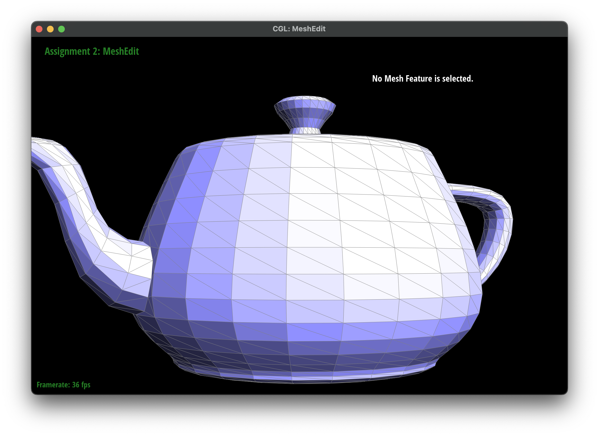
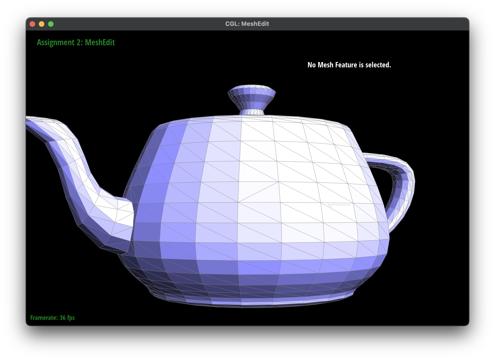
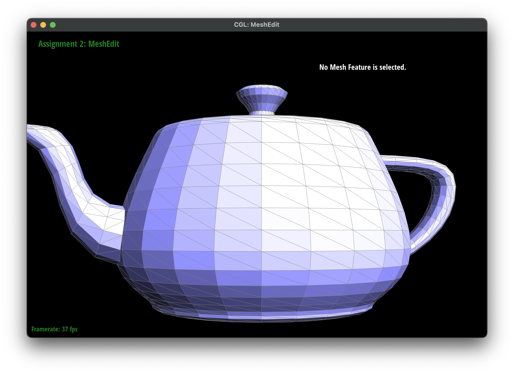
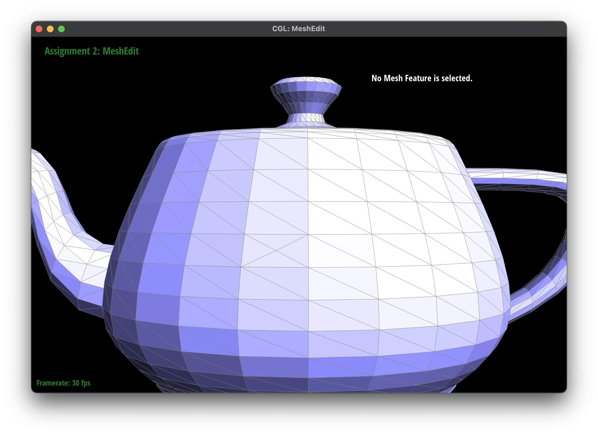
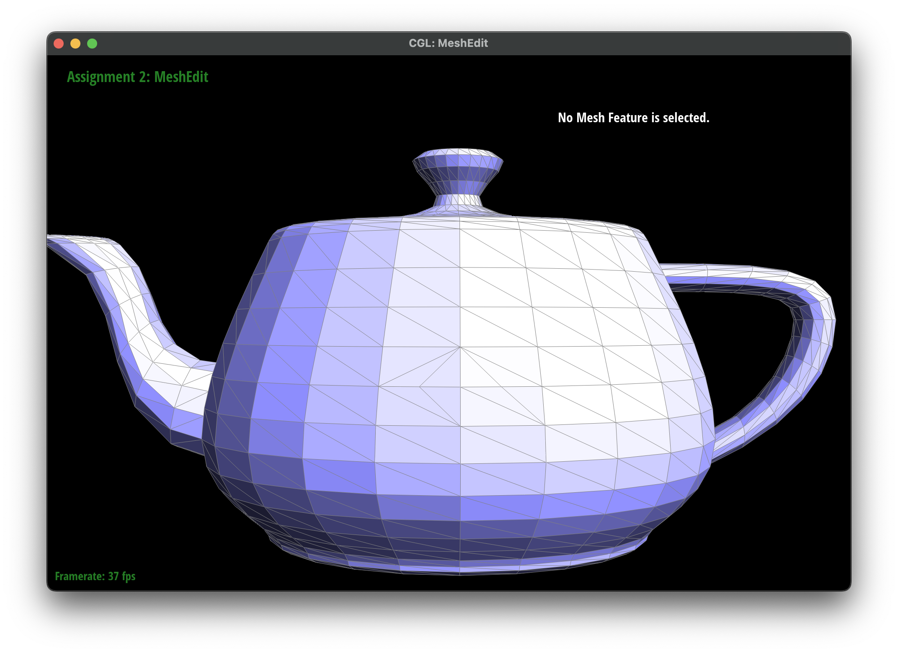

CS184/284A Spring 2025 Homework 2 Write-Up
Link to webpage: https://cal-cs184-student.github.io/hw-webpages-pants/hw2/index.html
Link to GitHub repository: https://github.com/cal-cs184-student/sp25-hw2-hw2
Overview
In the first section, we implemented de Casteljau's algorithm for evaluating Bézier curves and extended it to handle Bézier surfaces. This involved recursive linear interpolation to compute points on curves and surfaces at given parameters. We learned how Bézier curves and surfaces are constructed from control points and how they can be manipulated to create smooth, continuous shapes.In the second section, we worked with triangle meshes and implemented key mesh operations, including area-weighted vertex normals, edge flip, edge split, and Loop subdivision for mesh upsampling. These operations required careful manipulation of the half-edge data structure. We gained a deeper understanding of how meshes are represented and how topological changes (like edge flips and splits) affect the geometry and connectivity of the mesh.
One of the most interesting insights was how loop subdivision progressively smooths out sharp features in a mesh, and how preprocessing (like symmetric edge splitting) can preserve sharp edges and corners. We also learned the importance of careful pointer management in the half-edge data structure, as incorrect assignments could lead to broken meshes or infinite loops.
Section I: Bezier Curves and Surfaces
Part 1: Bezier curves with 1D de Casteljau subdivision
De Casteljau's algorithm is a recursive method to evaluate Bézier curves. Given a set of control points \( P_0, P_1, \dots, P_n \), the algorithm computes a point on the curve at a specific parameter \( t \) (where \( 0 \leq t \leq 1 \)).
Steps
- Linear Interpolation: For each pair of consecutive control points, perform a linear interpolation at parameter \( t \). This generates a new set of points.
- Recursion: Repeat the interpolation on the newly generated points until only one point remains.
- Result: The final point is the point on the Bézier curve at parameter \( t \).
Implementation
To implement de Casteljau's algorithm for evaluating Bézier curves:
- Input: Control points \( P_0, P_1, \dots, P_n \) and parameter \( t \).
-
Recursive Function:
- If there is only one control point, return it.
- Otherwise, compute intermediate points by interpolating between consecutive control points at \( t \).
- Recursively apply the algorithm to the intermediate points.
- Output: The final point on the curve at parameter \( t \).

|

|

|

|

|

|

|

|
Part 2: Bezier surfaces with separable 1D de Casteljau
Bézier surfaces are a generalization of Bézier curves to two dimensions. They are defined by a grid of control points \( P_{i,j} \), where \( i \) and \( j \) index the rows and columns of the control grid. The de Casteljau algorithm extends naturally to evaluate points on Bézier surfaces by applying the algorithm in two stages: first along one parameter (e.g., \( u \)), and then along the other parameter (e.g., \( v \)).
Steps
-
First Stage (u-direction):
- For each row of control points, use de Casteljau's algorithm to compute intermediate points at parameter \( u \).
- This reduces the 2D grid of control points to a 1D array of intermediate points.
-
Second Stage (v-direction):
- Use de Casteljau's algorithm on the intermediate points (computed in the first stage) at parameter \( v \).
- The result is the point on the Bézier surface at parameters \( (u, v) \).
Implementation
To implement de Casteljau's algorithm for Bézier surfaces:
- Input: A 2D grid of control points \( P_{i,j} \) and parameters \( u \) and \( v \).
-
First Stage:
- For each row of control points, apply de Casteljau's algorithm at parameter \( u \) to compute intermediate points.
-
Second Stage:
- Apply de Casteljau's algorithm to the intermediate points at parameter \( v \) to compute the final point on the surface.
- Output: The point on the Bézier surface at parameters \( (u, v) \).

Section II: Triangle Meshes and Half-Edge Data Structure
Part 3: Area-weighted vertex normals
Implementation
Repeat for each triangle that contains the starting vertex:- Get the three vertices making up the triangle
- Compute the two vectors from the starting vertex to each of the other two vertices
- Compute the cross product of these two vectors. This is a normal vector to the triangle
- Add the cross product to a running sum of normal vectors
Comparisions

|

|
Part 4: Edge flip
To implement the edge flip operation, I used half-edges to reassign pointers and update the connections between mesh elements. The process involved:
- Identifying the two triangles sharing the edge to be flipped.
- Reassigning the half-edges, vertices, and faces to reflect the new connections after the flip.
- Ensuring all pointers (e.g., next, twin, vertex, and face) were correctly updated to avoid lost pointers.
The most challenging part was reassigning the pointers, as incorrectly updating them could lead to the mesh being broken and holes to due to missing faces. To debug this, I used print statements to verify if the pointer assignemnts were correct at each step and checked the mesh after each flip to ensure the operation was performed correctly.
Debugging Journey
Initially, I encountered issues where the mesh would break or produce incorrect geometry due to misassigned pointers. For example:
- I mistakenly swapped the next pointers of half-edges, causing infinite loops during traversal.
- I forgot to update the face pointers for certain half-edges, leading to incorrect face assignments.
To resolve these issues, I checked each pointer assignment and compared the mesh before and after the flip. Using print statements and setting breakpoints in Xcode helped me identify and fix the errors. Additionally, I tested the operation by drawing out a simple mesh on paper before applying it to complex models like the teapot.
|

|

|
|
|
Part 5: Edge split
The edge split operation involved dividing an edge into two by inserting a new vertex at its midpoint and updating the mesh connections.
- I started by identifying the two triangles sharing the target edge and extracting all relevant half-edges, vertices, and faces.
- Next, I created a new vertex at the midpoint of the edge and added new half-edges, edges, and faces to accommodate the split.
- Pointer reassignment (next, twin, vertex, and face) was critical to ensure that the mesh remained connected and that no pointers were lost.
Debugging Journey
Debugging the edge split operation was challenging. I used print statements to verify the pointer assignments and checked the mesh after each split to catch issues like incorrect face assignments or broken connections. Drawing out the process of splitting a mesh helped me address some problems before applying the operation to the teapot. An issue I made was forgetting to update the twin pointers for new half-edges, which caused inconsistencies in the mesh. To fix this, I had to verify all of the pointers in the system before and after the operation.
|

|

|
|
|
|

|
|
|

|
|
Part 6: Loop subdivision for mesh upsampling
Algorithm
Our loop subdivision algorithm starts by calculating the new positions of existing and new vertices, not changing the actual positions to prevent changing the calculated positions.
A new vertex's position is a weight sum of the vertices in the triangles that contain the split edge. An old vertex's position is a weight sum of its original position and the sum of the positions of its neighbors.
Next, all edges are split and the new vertex at the midpoint of the edge is moved to its final position. All new position are calculated by in now, so is it safe to change the vertex positions.
Then all new edges (edges not making up an edge in the original mesh are) are flipped if connecting a new and old vertex.
Finally, the original vertices have their positions updated to their final positions.
For debugging, we found it helpful to print the address of specific
mesh elements and examine its neighbors in the GUI as well with the
check_for functions provided.
When iterating over edges while splitting, care must be taken to prevent infinite loops. We loop using a counter rather than the iterator. This relies on new edges being appended to the end of the list.
Observations
When subdividing a mesh with sharp edges and corners, the sharp edges and corners are progressively smoothed out, as demonstrated by these screenshots.

|

|

|

|
Repeatedly subdividing dae/cube.dae results in a asymmetric mesh.
Preprocessing the cube by splitting all edges such that the mesh is symmetric
before subdividing prevents this behavior. Beacuse the mesh is symmetric before dividing,
the splits and flips during the subdivision process are also symmetric, resulting
in a more symmetric mesh after repeated subdivisions.

|

|